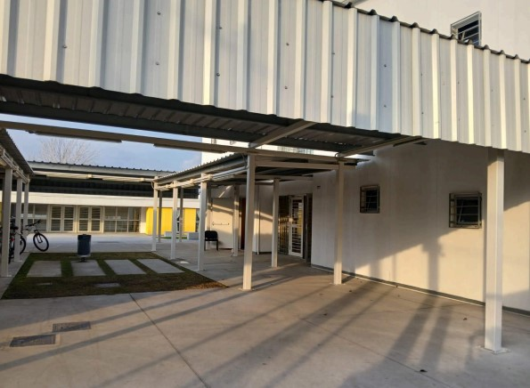
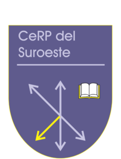

Aprender a enseñar también es revisar la propia práctica.
Portafolio de José Germán Laluz, estudiante de 3.er año del Profesorado de Informática del Centro Regional de Profesores del Suroeste, construido a partir de la práctica docente en el Polo Educativo Tecnológico San José.


Contexto, observación, práctica y reflexión
La navegación está organizada para reconstruir el proceso de práctica docente y no solamente almacenar documentos.
Institución
Historia, infraestructura, oferta educativa y vínculo con NODO + Innovación.
02Bachillerato
Tecnología de la Información y contexto curricular del grupo de práctica.
03Grupo
Características, fortalezas, dificultades y decisiones didácticas asociadas.
04Lógica
Programa oficial y planificación formativa del profesor adscriptor.
05Prácticas
Secuencias, planificaciones, materiales, evaluación y reflexión posterior.
06Evidencias
Documentos, recursos y producciones vinculadas al recorrido.